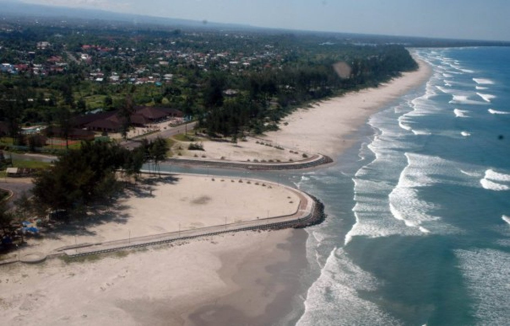
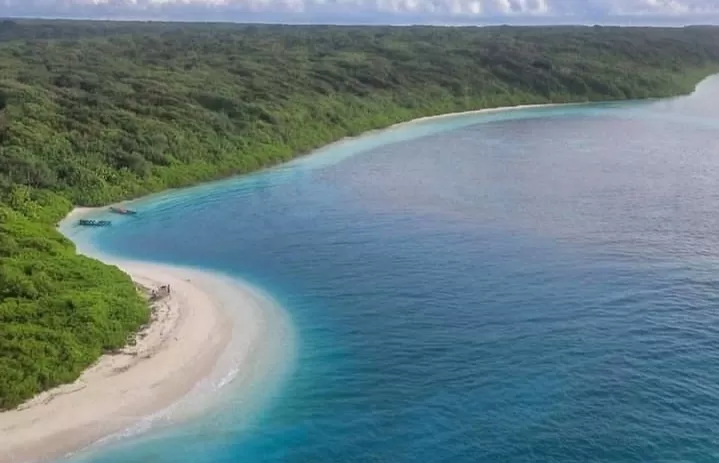
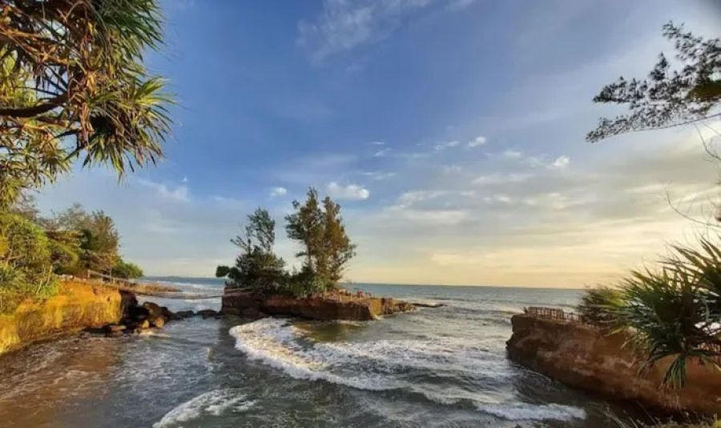
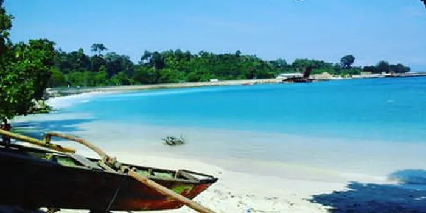
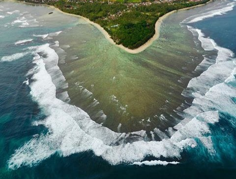

Pantai Panjang
Pantai Panjang Bengkulu adalah salah satu destinasi wisata unggulan di Kota Bengkulu yang terkenal dengan garis pantainya yang membentang sepanjang sekitar 7 kilometer dan lebar mencapai 500 meter saat air surut. Pantai ini menyuguhkan hamparan pasir putih yang lembut, air laut yang jernih, serta deretan pepohonan cemara dan pinus yang menambah kesan sejuk dan alami. Ombak yang relatif tenang menjadikan pantai ini cocok untuk berbagai aktivitas seperti berenang, berselancar, jogging, hingga memancing. Keindahan sunset di Pantai Panjang juga menjadi daya tarik utama, di mana pengunjung dapat menikmati matahari terbenam dengan panorama langit berwarna keemasan yang menawan.
SelengkapnyaPulau Enggano
Pulau Enggano adalah salah satu pulau terluar Indonesia yang terletak di Samudra Hindia, sekitar 120 hingga 156 km dari pesisir barat Pulau Sumatra dan termasuk dalam wilayah administratif Kabupaten Bengkulu Utara. Dengan luas sekitar 400 km² dan populasi sekitar 4.500 jiwa, pulau ini masih sangat alami dan belum terlalu ramai dikunjungi wisatawan. Akses menuju Enggano cukup terbatas, hanya dapat dicapai dengan kapal feri dua kali seminggu dari Pelabuhan Baai atau dengan penerbangan perintis. Keasrian pulau ini menjadi daya tarik utamanya, dengan kekayaan flora dan fauna endemik seperti burung kacamata Enggano dan celepuk, serta lanskap hutan mangrove dan pantai berbatu karang yang masih alami dan terjaga.
SelengkapnyaPantai Sungai Suci
Pantai Sungai Suci merupakan destinasi wisata alam yang menawan di Desa Pasar Pedati, Kecamatan Pondok Kelapa, Kabupaten Bengkulu Tengah, dan hanya berjarak sekitar 15–20 km dari pusat Kota Bengkulu. Pantai ini dikenal karena keindahan alamnya yang unik, dengan tebing-tebing karang dan batuan besar yang menghadap langsung ke Samudra Hindia, menciptakan pemandangan mirip Tanah Lot di Bali. Salah satu daya tarik utama adalah jembatan gantung kembar yang menghubungkan daratan pantai dengan sebuah pulau kecil di tengah laut, yang menghadirkan sensasi adrenalin saat menyeberang sekaligus menjadi spot favorit untuk berfoto. Pengunjung hanya perlu membayar sekitar Rp5.000 untuk menikmati pengalaman ini, menjadikannya destinasi yang menarik sekaligus terjangkau.
SelengkapnyaPantai Linau Bintuhan
Pantai Linau Bintuhan yang terletak di Desa Linau, Kecamatan Maje, Kabupaten Kaur, Bengkulu, merupakan destinasi wisata bahari yang memesona dengan pasir putih lembut dan air laut yang sangat jernih. Keindahan bawah lautnya yang dihiasi terumbu karang alami menjadikan pantai ini surga bagi pecinta snorkeling dan diving. Lanskap pantai juga semakin memukau dengan deretan batu karang, pepohonan hijau, dan langit biru yang menciptakan suasana tenang dan menyegarkan. Fasilitas di sekitar pantai cukup sederhana namun memadai, seperti area parkir, toilet umum, serta beberapa warung lokal yang menawarkan kuliner khas daerah, termasuk sate gurita yang unik. Menariknya, wisatawan juga bisa ikut serta dalam aktivitas menangkap gurita secara tradisional bersama warga setempat.
SelengkapnyaPantai Laguna
Pantai Laguna, atau dikenal juga sebagai Pantai Laguna Samudra, terletak di Desa Merpas, Kecamatan Nasal, Kabupaten Kaur, Bengkulu. Pantai ini memikat pengunjung dengan pasir putih yang lembut, air laut yang biru jernih, dan garis pantai yang landai serta luas. Suasana yang sejuk dan tenang menjadikannya tempat ideal untuk berenang, piknik, atau sekadar bersantai menikmati panorama laut yang menenangkan. Ombaknya cukup bersahabat, cocok untuk bermain air atau bahkan berselancar ringan bagi pengunjung yang menyukai tantangan. Pantai ini juga dikenal sebagai spot yang bagus untuk menikmati matahari terbit dan terbenam.
Selengkapnya